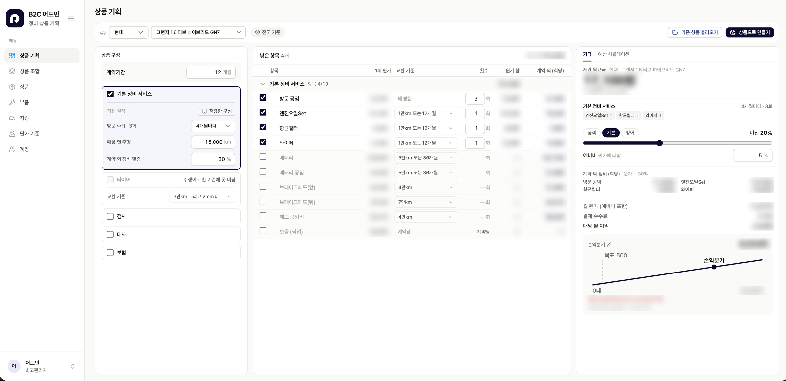
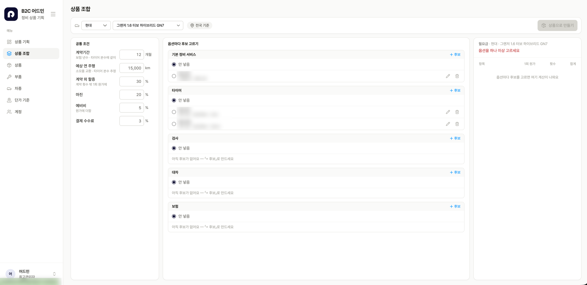
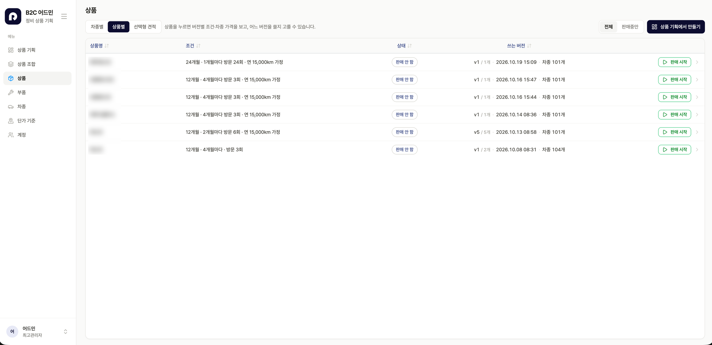
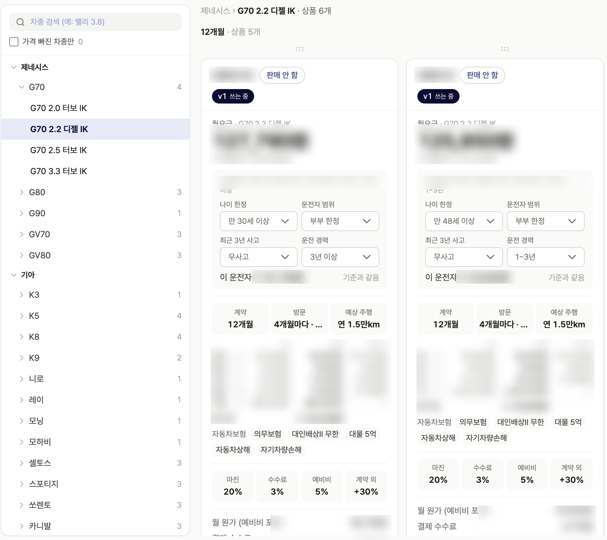
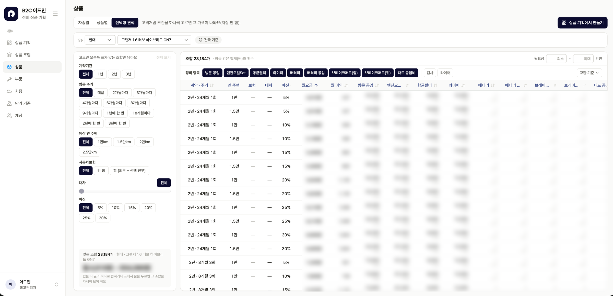

원가를 넣으면 손익분기까지 즉시
정비 항목·교환 주기·방문 주기·마진을 바꾸는 순간 월요금, 대당 월 이익, 손익분기 대수가 다시 계산된다
조합 2만여 개를 한 표에서 비교
계약기간·방문 주기·주행거리·보험·마진 조건을 고르면 한 차종 기준 23,184개 조합이 좁혀지는 선택형 견적
상품도 버전으로 관리
상품마다 버전을 쌓고 쓸 버전을 고르며, 판매 시작·중단 상태를 101개 차종에 일괄 적용
보험은 조사 후 단계적으로
자차수리(보험) 연계의 법령·라이선스 요건을 직접 조사해 공유 — 정비 서비스부터 출시하는 범위로 정리
01문제 — 무엇을 팔지 아직 정해지지 않았다
회사가 B2C 정비 서비스를 새로 준비하면서, 첫 질문은 화면이 아니라 상품이었습니다. 어떤 정비 항목을 넣고, 몇 개월마다 방문하고, 계약은 몇 년으로 할지에 따라 원가와 이익이 완전히 달라집니다.
변수가 서로 얽혀 있어 하나만 바꿔도 가격과 이익이 전부 다시 계산돼야 했습니다. 그래서 사업 책임자가 조건을 바꿔 보며 바로 판단할 수 있는 도구를 먼저 만들기로 했습니다.
02상품 기획 — 왼쪽에서 바꾸면, 오른쪽에서 답이 나온다
화면을 구성 → 항목·원가 → 가격·손익 3단으로 나눴습니다. 왼쪽에서 계약기간과 방문 주기, 서비스 묶음을 고르면 가운데 표에 정비 항목별 원가와 횟수가 채워지고, 오른쪽에 월요금과 손익이 계산됩니다.

- 마진은 숫자 대신 전략으로 고른다 — 공격·기본·방어 프리셋과 슬라이더로, 가격 전략을 바꿨을 때 이익이 어떻게 움직이는지 바로 본다
- 손익분기는 목표와 함께 보여준다 — 목표 판매 대수 대비 손익분기 위치를 차트로 그리고, 목표에 못 미치면 예상 월 손실을 빨간 글씨로 띄운다
- 계약 밖의 정비까지 계산한다 — 계약 횟수를 넘는 정비에는 할증을 붙여 회당 가격을 따로 낸다
03상품 조합 — 옵션마다 후보를 만들어 끼워 본다
기본 정비, 타이어, 검사, 대차, 보험을 옵션 단위로 분리하고, 옵션마다 후보를 여러 개 만들어 두게 했습니다. 공통 조건(계약기간·주행거리·마진·예비비·수수료)은 한 번만 정하고, 후보를 갈아 끼우며 상품을 조립합니다.

04상품 관리 — 버전과 판매 상태
만든 상품은 수정할 때마다 버전이 쌓이고, 어느 버전을 쓸지 고를 수 있습니다. 판매 시작·중단도 상품 단위로 관리하며, 한 상품이 100여 개 차종에 한꺼번에 적용됩니다.

차종별 보기에서는 같은 상품이라도 운전자 조건(나이·운전자 범위·사고 이력·운전 경력)을 바꾸면 보험이 포함된 가격이 어떻게 달라지는지 카드 안에서 바로 확인합니다.

05선택형 견적 — 고객처럼 하나씩 골라 본다
고객 앱에서 조건을 고르는 경험을 미리 검증하려고, 조건을 칩으로 하나씩 고르면 맞는 조합만 남는 견적 표를 만들었습니다. 한 차종 기준 23,184개 조합에서 시작해 계약기간·방문 주기·주행거리·보험·마진을 좁혀 가며 월요금 범위를 확인합니다.

06보험 — 조사해 보니, 순서를 바꿔야 했다
회사는 자차수리 서비스까지 함께 제공하고 싶어 했습니다. 자차수리는 보험과 맞물려 있어서, 관련 법령 페이지부터 직접 찾아보며 요건을 조사했습니다. 그 결과 라이선스를 비롯해 준비할 것이 많다는 걸 확인하고 팀에 공유했습니다.
- A정비 + 보험 동시 출시 — 상품 매력은 크지만, 라이선스 등 요건을 갖추는 동안 출시 전체가 묶인다
- 선택정비 서비스 먼저, 보험은 구조만 열어 두고 단계적으로 — 정비 상품으로 먼저 시장을 확인하고, 보험은 준비되는 대로 옵션으로 붙인다
조사 결과를 근거로 사업 책임자와 이 방향으로 정리했습니다. 도구에는 이미 보험 옵션 자리와 운전자 조건별 가격 구조를 만들어 두어, 나중에 붙일 때 상품 구조를 다시 짤 필요가 없게 했습니다.
07일하는 방식 — 낯선 도메인은 검토받으며 고친다
정비 상품은 제게 익숙한 분야가 아니었습니다. 그래서 만든 화면을 사업 책임자에게 틈틈이 검토받고, 받은 피드백을 바로 반영하는 짧은 주기로 일하고 있습니다. 구현은 Claude Code로 진행해, 검토에서 나온 수정을 당일 화면에 반영할 수 있었습니다.